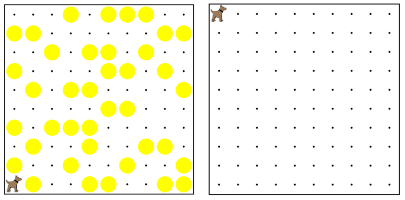

Karel's world is a complete mess. There are tennis balls all
over the place, and you need to clean them up. Karel will
start in the bottom left corner of the world facing east,
and should clean up all of the tennis balls in the world.
This program should be general enough to work on any size
world with tennis balls in any locations.
卡雷爾的世界是一塌糊塗。還有所有的地方網球，你需要清除它們。
卡雷爾將開始面向東方世界的左下角，並應清理乾淨所有的網球在世界上。
這個程序應該是一般足以與網球在任何地點工作在任何大小的世界。
